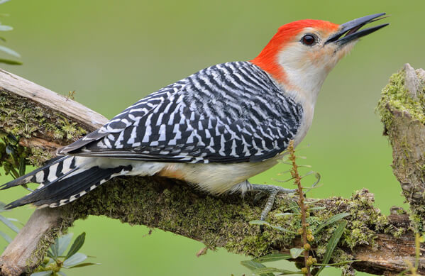
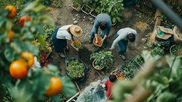
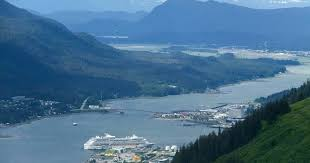

I’m a dual-degree student studying Computer Science at the University of Notre Dame and Mathematics at Saint Mary’s College. I’m passionate about leveraging data science and machine learning to address complex environmental and social challenges.
From mentoring high school girls in coding to conducting research on climate change and species adaptation, I thrive at the intersection of data, creativity, and impact.

Applied Linear Regression and Generalized Additive Models using Machine Learning to study bird size variation over time in relation to climate trends. Visualized results and presented at the JMM Conference 2025. Will also be presenting at JMM 2026 and NCUWM 2026 conferences.
Paper in Process
Used R-based statistical modeling and hypothesis testing to evaluate community market impact in a group setting. Identified key trends through data visualization and presented recommendations.
View Paper Analysis
Developed differential equation models in a team setting to optimize sustainable tourism in Juneau, Alaska. Analyzed the balance between economic revenue and carbon emissions using mathematical modeling and presented actionable sustainability strategies.
View Paper AnalysisCreated a chat application in Operating Systems class with partner to understand how a client and server can be used for multiple users to chat to each other. Used threads, a monitor, and queues in implementation.
Currently seeking a Data Science Internship for Summer 2026 — let’s talk!
Email Me